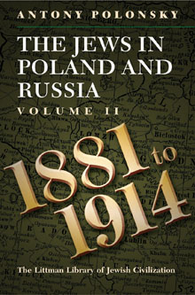

The Jews in Poland and Russia
Volume 2: 1881 - 1914
The history of the Jewish communities of these lands-where most of the Jews of Europe and America originated-is often the subject of woolly thinking and stereotypes. Antony Polonsky recreates this lost world in a way that avoids both sentimentalism and the simplification of the east European Jewish experience into a story of persecution and martyrdom. This is an important story whose relevance extends beyond the Jewish world or the bounds of east-central Europe.
More info
Antony Polonsky provides a comprehensive survey of the history - socio-political, economic, and religious - of the Jewish communities of eastern Europe from 1750, when the Polish-Lithuanian Commonwealth was the dominant political unit, to the present. Until the Second World War, this area was the heartland of the Jewish world: almost all the major movements which have characterized that world in recent times had their origins here, and it was home to the majority of the world's Jews. Nearly three and a half million lived in Poland alone, while nearly three million more lived in the Soviet Union.
Although the majority of the Jews of Europe and the United States, and most of the Jews of Israel, originated from these lands, the history of their Jewish communities is not well known. Rather, it is the subject of mythologizing and stereotypes that fail both to bring out the specific features of the Jewish civilization which emerged here and to illustrate what was lost in the passage across the Channel and the Atlantic. Jewish life in these parts, though often poor materially, was marked by a high degree of spiritual and ideological intensity and creativity. Antony Polonsky recreates this lost world—brutally cut down by the Holocaust and less brutally but still seriously damaged by the Soviet attempt to destroy Jewish culture—in a way that avoids both sentimentalism and the simplification of the the east European Jewish experience into a story of persecution and martyrdom. Wherever possible, the unfolding of history is illustrated by contemporary Jewish writings to show how Jews felt and reacted to the complex and difficult situations in which they found themselves.
It is an important story whose relevance reaches far beyond the Jewish world or the bounds of east-central Europe. Polonsky establishes the context with a review of Jewish life in Poland and Lithuania down to the mid-eighteenth century, describing the towns and shtetls where the Jews lived, the institutions they developed, and their participation in the economy. He also considers their religious and intellectual life, including the emergence of hasidism, and the growth of opposition to it.
He then describes government attempts to integrate and transform the Jews in the period from 1764 to 1881 and the Jewish response to these efforts. He considers the impact of modernization and the beginnings of the Haskalah movement, and looks at developments in each area in turn: the problems of emancipation, acculturation, and assimilation in Prussian and Austrian Poland; the politics of integration in the Kingdom of Poland; and the failure of forced integration in the tsarist empire.
The third part of the book considers the deterioration of the position of the Jews in the period from 1881 to 1914 and the new Jewish politics that led to the development of new movements: Zionism, socialism, autonomism, the emergence of modern Hebrew and Yiddish literature, Jewish urbanization, and the rise of Jewish mass culture. Galicia, Prussian Poland, the Kingdom of Poland, and the tsarist empire are all treated individually, as are the main towns.
The final part deals with the twentieth century. Starting from the First World War and the establishment of the Soviet Union, it deals in turn with Poland, Lithuania, and the Soviet Union up to the Second World War. It then reviews Polish—Jewish relations during the Second World War and examines the Soviet record and the Holocaust. The final chapters deal with the Jews in the Soviet Union and in Poland since 1945, concluding with an epilogue on the Jews in Poland, Lithuania, Belarus, Ukraine, and Russia since the collapse of communism.
About the author
Antony Polonsky was born in Johannesburg, and studied history and political science at the University of the Witwatersrand. He went to Oxford on a Rhodes Scholarship in 1961 and read modern history at Worcester College and St Antony's College. He taught at the London School of Economics and Political Science from 1970 to 1992. Since then he has been at Brandeis University, where in 1999 he was appointed Albert Abramson Professor of Holocaust Studies, an appointment held jointly at the United States Holocaust Memorial Museum and Brandeis University. He has also been a visiting professor at the University of Warsaw, the Institute for the Human Sciences, Vienna, and the University of Cape Town; Skirball visiting fellow at the Oxford Centre for Hebrew and Jewish Studies; and Senior Associate Member of St Antony's College, Oxford.
He is the author of Politics in Independent Poland (1972), The Little Dictators: A History of Eastern Europe since 1918 (1975), and The Great Powers and the Polish Question, 1941-1945 (1976). He is the editor of Abraham Lewin's A Cup of Tears: A Diary of the Warsaw Ghetto (1988), which was awarded the Joseph and Edith Sunlight Literary Prize in 1989 and the prize of the (US) National Jewish Book Council in the Holocaust section in 1990. He is co-author of The History of Poland since 1863 (1981) and The Beginnings of Communist Rule in Poland (1981), and co-editor of Ideas into Politics Aspects of European History, 1880-1950 (1984), The Jews in Poland (1986), Polish Paradoxes (1990), The Jews in Warsaw (1991), Jews in Eastern Poland and the USSR, 1939-1946 (1991) and The Jews in Old Poland (1993). He is the editor of Polin: Studies in Polish Jewry, also published (since 1993) by the Littman Library.
Professor Polonsky is vice-president of the Institute for Polish-Jewish Studies and of the American Association for Polish-Jewish Studies. He is a member of the International Advisory Board of the Mordecai Anieliewicz Centre for Jewish Studies, University of Warsaw, and of the Executive Committee of the National Polish American–Jewish American Task Force, and an Associate of the Ukrainian Research Institute of Harvard University. In 2011 he was awarded the Officer's Cross of the Order of Merit of Polonia Restituta and the Officer's Cross of the Order of Merit of Independent Lithuania.
Contents
List of Maps
List of Tables
Note on Transliteration
Maps
Introduction
1 The Position of the Jews in the Tsarist Empire, 1881–1905
2 Revolution and Reaction, 1904–1914
3 The Kingdom of Poland, 1881–1914
4 Galicia in the Second Half of the Nineteenth Century
5 Prussian Poland, 1848–1914
6 Jewish Spaces: Shtetls and Towns in the Nineteenth Century
Statistical Appendix
7 Modern Jewish Literature in the Tsarist Empire and Galicia
8 Jewish Religious Life from the Mid-Eighteenth Century to 1914
9 Women in Jewish Eastern Europe
10 The Rise of Jewish Mass Culture: Literature, Press, Theatre
Conclusion
Glossary
Bibliography
Index
Reviews
'Powerful roller coaster narrative'
15 Minutes Magazine
'Succeeds admirably. Simply put, these volumes are required reading for anyone with a serious interest in East European history or for anyone looking for a scholarly assessment of a particular feature of Polish or Russian Jewish history. Handsomely produced, with extensive maps and tables, and a glossary . . . will remain a standard work in the field for some time . . . a body of work that, in summarizing the current state of our knowledge, effectively sets the agenda for future scholars. Polonsky is perhaps the scholar most responsible for the growth of Polish Jewish studies in the late twentieth century . . Very few historians could write a series of volumes like this . . . [he] has armed scholars with a formidable tool that will help them dispel stereotypes . . . Just as these volumes are destined to become the starting point for the work of many students, they will be the touchstone for scholars working in the field at all levels.'
Sean Martin, European History Quarterly
'Combines a masterful grasp of Jewish history with that of eastern Europe. While underlining the unique features and achievements of the Jewish communal experience he authoritatively integrates them into the history of the countries in which Jews lived . . . Incorporating current, ground-breaking scholarship from North America, Israel, and Europe these beautifully narrated volumes should not only be seen as a staple of university courses, but also as a must-read for anyone attempting to understand any aspect of modern Jewish history and religious tradition, wherever it may be playing out . . . With this extremely important book, Antony Polonsky not only writes history but, following the example of his illustrious predecessors, makes it.'
Katarzyna Person, European Judaism
'Exemplary and formidable . . . Polonsky, as much as anyone else, has created the field of modern Jewish history as a subject to be considered and understood rather than simply a tragic past to be mourned. He is too good a historian to confuse the history of Jewish life with the German policies that brought Jewish death . . . The barely visible commitment in these three wonderful volumes is to rescue a world from polemic, for the sake of history.'
Timothy Snyder, Wall Street Journal
'A truly landmark study of east European Jewish history for the mid-fourteenth century to the outbreak of World War I. This work is an invaluable synthetic exposition of Jewish civilization in Poland and Russia that pays close attention to the larger historical context in which Jewish history unfolded in these areas. While exhaustive in presenting historical detail and utilizing available sources and data of all types, Polonsky is also masterful in conveying the texture of Jewish life in different regions during each period. His study weaves together numerous aspects of that life—among others, the relationship of Jewish communities to the states in the region and their governance mechanisms; Jewish religious and political movements; the evolving role of the synagogue in communities; the wide variety of Jewish organizations over time and space; cultural changes, including the development of the mass press, modern literature, and theatre; the experiences of Jewish women; and descriptions of the towns and cities in which Jewish history played out. The contribution of Polonsky's study, however, is not only an impressive synthesis of a vast topic and vast amount of information. In integrating all of this material, the author also deftly crafts his own interpretations of trends in the area and the timing of shifts in them. His marshalling of evidence and his own insights add up to a compelling set of arguments about the course of Jewish history. Polonsky addresses Jewish, Polish, and Russian historical developments all with great nuance, and that depth of understanding allows him to present the complexities of these intertwined histories with a subtlety rarely achieved in projects of such ambitious temporal and spatial scope. This study will become a "go to" reference for scholars of east European Jewish history for a long time to come.'
From the citation for the 2011 Kulczycki Book Prize for Polish Studies, awarded to Volumes I and II
The second volume of Polonsky's well-reseached, eloquently written study provides a finely distinct portrait of Jewish life in eastern Europe in the years leading up to the Great War . . . Highly recommended.'
R. K. Byczkiewicz, Choice
'The first two volumes of Antony Polonsky's magisterial The Jews in Poland and Russia trilogy provide a much-needed addition to the landscape of Jewish historical studies . . . [a] significant achievement in presenting the most modern findings in a clear, readable, comprehensive survey . . . his narrative is grand and his analysis tight . . . an excellent synthesis of this community's history, incorporating much of the groundbreaking scholarship of the last few decades. Repeatedly, the volumes remind us of the many lost opportunities for real reform in the region. They help correct the nostalgic and romanticized portraits of what is sometimes considered a lost civilization, while simultaneously demonstrating the vibrancy and diversity of Jewish life in the region . . . essential reading for those seeking a thorough and balanced understanding of Jewish life in pre-twentieth century Eastern Europe.'
Jeffrey Veidlinger, H-Judaic
'For several decades now, Antony Polonsky has been at the forefront of Polish–Jewish studies . . . It is thus fitting that Polonsky, who has nurtured young scholars, especially in Poland itself and North America, should bring together old and new work in this remarkable multi-volume synthesis of Jewish history and culture . . . These volumes will provide the first port of call for any student of east European Jewry.'
Tony Kushner, Jewish Chronicle
'We can only commend Antony Polonsky for his massive effort to explain seven centuries of Jewish history in a mere 2,000 pages . . . Polonsky's strength lies in his ability to illuminate intellectual and cultural developments . . . Because of the excellent bibliographies, extensive annotation, and wonderful maps included in each volume, any reader wishing to read in greater detail about Polish and Russian Jewry will have plenty of resources to enable the search.'
Alexandra S. Korros, Jewish Quarterly
'An excellent synthesis of recent research on east European Jewish culture and history. As such it fills a definite need for an accessible introduction to the current scholarship and thinking about the Jews of Poland and Russia . . . should be on the reading list of anyone interested in the history and folk cultures of eastern Europe, whether they work specifically with Jewish history and folk culture, or with other regional cultures.'
David Elton Gay, Journal of Folklore Research
‛Antony Polonsky's three-volume work is without doubt a remarkable achievement in the study of the history of East European Jewry in general, summarizing not only his quarter-century of intellectual labour on this topic but also the work of his predecessors.’
Serhiy Hirik, Judaica Ukrainica
'Any reader who invests the time and money to read the book . . . will find it very rewarding—and not just because of the wealth of information it contains. What Polonsky's book brings home, in a way that a narrower study could not, is the sheer complexity and vitality of Jewish life in that time and place . . . this broader picture is needed to make sense of the social changes that were accelerating by the late nineteenth century—above all, in the situation of women, the subject of one of Polonsky's best chapters . . . Polonsky's panoramic book, which packs so much vivid detail and statistical information into its 500 pages, helps to show just how rich, and how difficult, that life really was.'
Adam Kirsch, The New Republic and Tablet Magazine
'Polonsky's magisterial The Jews in Poland and Russia is one of those rare works that can hope to bridge the gap between specialist and "intelligent general reader", providing a strong narrative and appealing prose for the latter as well as an up-to-date distilled knowledge of both primary and secondary sources for the former. No one interested in Jewish, Polish, or Russian history can afford to be without these volumes . . . will long remain the standard work on this crucial Jewish community . . . While a survey of this sort requires a goodly bit of politics . . . Polonsky has gone out of his way to include culture, religious life, gender, Jewish mass culture, and social history . . . The books' structure is entirely appropriate for its primary purpose: to provide a basic overview of this Jewish community's history . . . strikingly high level of scholarship . . . [The publisher] is particularly to be commended on its allowing Polonsky to cite at length from the Jewish literary sources he is considering and not begrudging space for a dozen pages of useful statistics (not a small thing in a publishing world where bibliographies are often considered superfluous!) . . . This history, written by a major scholar of both Polish and Jewish history and a person profoundly attached to both communities, is exemplary in its efforts to integrate Jews into Polish history, neither white-washing sources of friction nor painting an overly rosy picture. The most important thing one can say about Antony Polonsky's The Jews in Poland and Russia is: get it and read it!'
Theodore R. Weeks, The Polish Review
'This superb and very up-to-date book is very well written, carefully documented, balanced, and will be a standard reference in the field. It has a glossary and a wide-ranging bibliography, very useful maps, and statistical tables, all of which make it a good starting point for any reading on east European Jewry.'
Shaul Stampfer, Religious Studies Review
‘The first serious, and most successful, effort thus far to summarize the history of the Jews of “Eastern Europe” . . . the first book to synthesize the vast research that has emerged since the seventies . . . comprehensive and multidisciplinary . . . there is no book today that can compare to its scope and to the vast and new materials that he brings forth and analyzes with a broad imagination, an intensive approach, and a moderate style.’
Moshe Rosman, Zion
Prizes
Winner of the Pro Historia Polonorum Prize for the best book on the history of Poland published in a foreign language between 2007 and 2011, established by the Polish Senate and awarded by the Polish Historical Association (awarded to Volumes 1 & 2)
Winner of the 2011 Kulczycki Book Prize for Polish Studies, awarded by the American Association for Slavic, East European, and Eurasian Studies.

518 pages, 5 maps, 44 tables
ISBN: 978-1-904113-83-6
£39.50 / $59.50
Publication 17 June 2010
Other books by this author:

The Jews in Poland and Russia: A Short History
The Jews in Poland
and Russia
Volume 1: 1350-1881